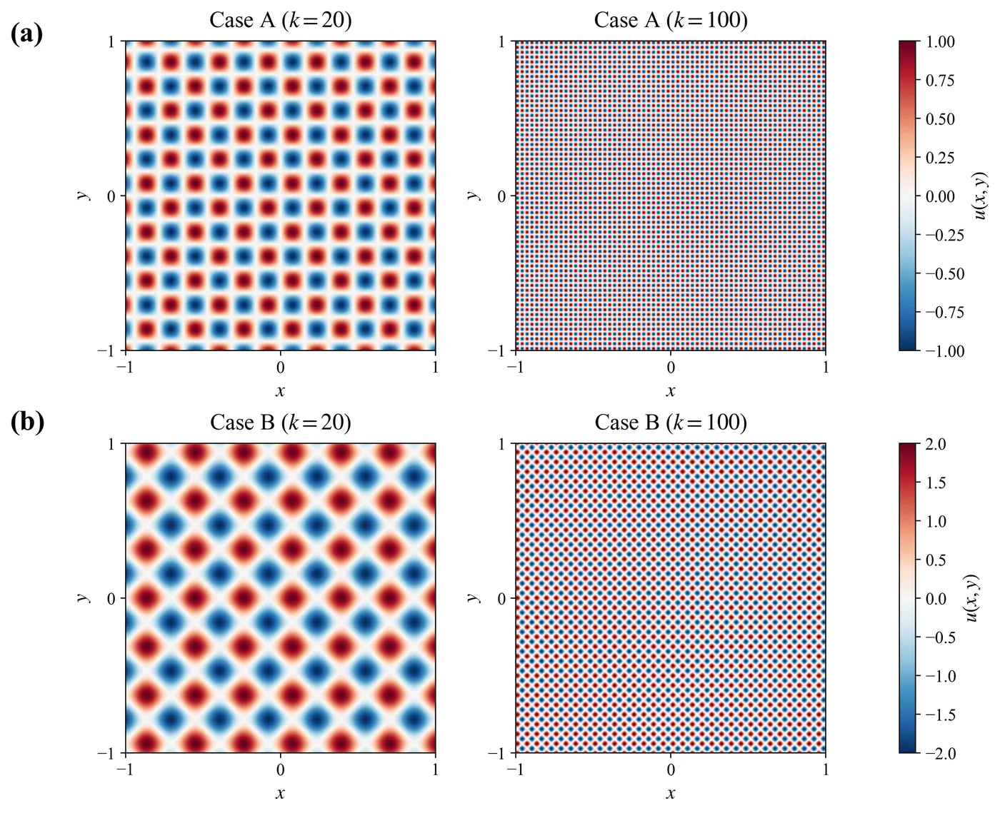
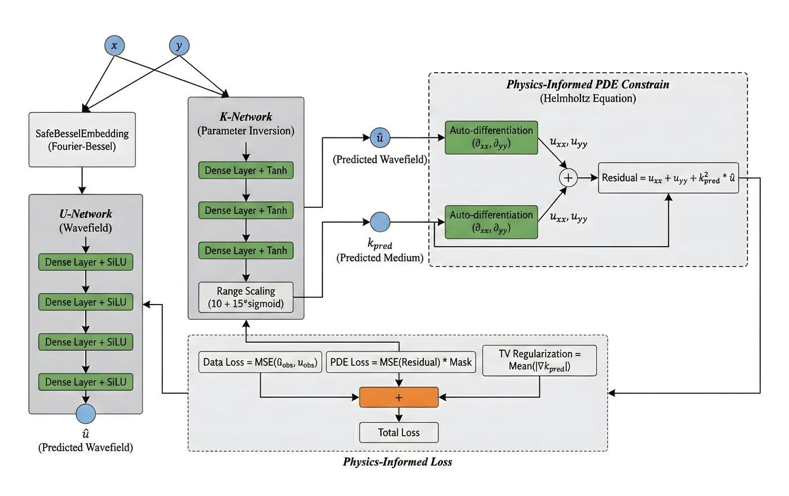
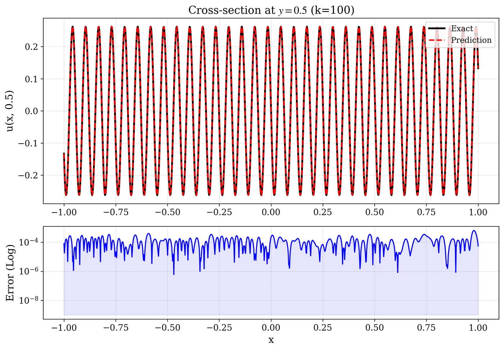
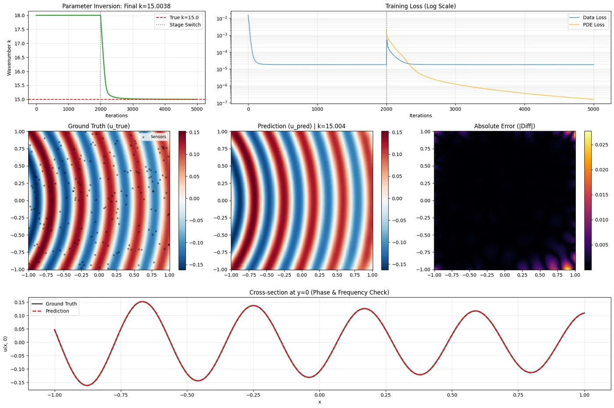

学术论文 · EAAI · 返修 · 共同一作
Spec-PINN：基于算子诱导流形嵌入的物理信息神经网络
Physics-informed neural network based on operator-induced manifold embedding for wave propagation and medium inversion. 面向高频 Helmholtz 方程的正问题波场模拟与介质参数反演，用算子诱导嵌入缓解谱偏差与周期跳跃。
- 正问题波数范围
- $k=5\sim1000$
- 极端高频相对 $L_2$
- $\sim10^{-4}$
- 非均匀 $k$ 反演误差
- $4.76\%\to0.36\%$
问题｜高频正演难拟合，反演易周期跳跃
频域波动由 Helmholtz 方程描述。波数 $k$ 升高后，波场空间振荡加剧：标准 PINN 受谱偏差影响，优先拟合低频，高频相位易滞后； 反演时 $k(\mathbf{x})$ 与 $u(\mathbf{x})$ 以 $k^2 u$ 强耦合，目标非凸，优化器容易匹配错误周期，出现 cycle-skipping。

方法｜Spec-PINN：把 Helmholtz 解析性质写入特征层
Spec-PINN 的核心不是在 loss 里再加几项惩罚，而是把算子解析性质做成首层嵌入（强归纳偏置，而非硬约束）： 正问题用自由空间基本解构造物理核通道，并用源项 FFT 主导模态做谱对齐； 逆问题用汉克尔渐近展开构造多尺度字典，配合双网络把非线性波数搜索转成字典权重优化。
正问题：物理核通道 + 源项谱通道

逆问题：渐近多尺度基双网络

正问题结果｜跨三数量级波数保持波形
在驻波与干涉波基准上，Spec-PINN 在 $k\in\{5,10,20,100,1000\}$ 保持稳定重建； 高波数下误差场更接近无结构噪声，而不是随频率加剧的污染斑块。


逆问题结果｜均匀标量识别与非均匀异常体重构
均匀介质标量 $k$ 识别中，引入 PDE 约束后参数可从偏差初值收敛到真值； 非均匀异常体场景下，相对 Fourier baseline，Spec-PINN 的波数场误差更低、背景伪影更少。


说明
本稿投递 EAAI（稿号 EAAI-26-5364），目前处于返修阶段；网站展示图件来自修订稿中的典型结果，表述按公开可答辩口径做了收敛 （嵌入为强归纳偏置而非硬约束）。完整方法、表格与补充实验见 PDF。